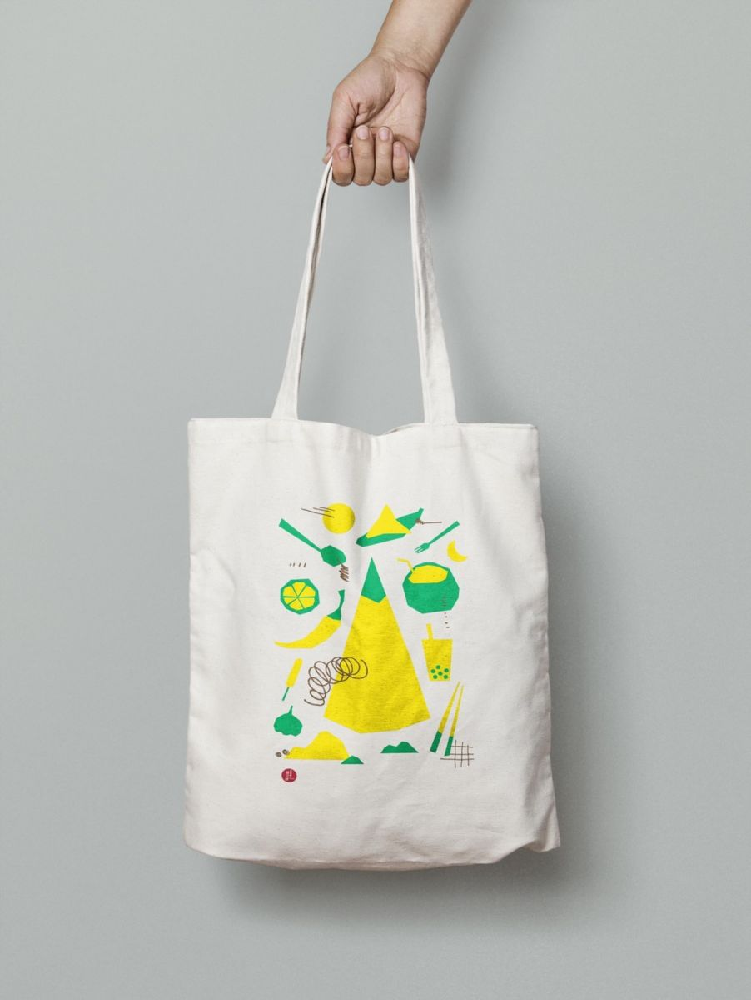

2021-10-05
「親愛的家鄉，你好嗎？」 民進黨婦女部舉辦新住民圖文徵件比賽，豐富獎金等你拿
全國的新住民和新二代們照過來！寫出屬於你的故事，就有機會獲得豐厚獎金！
民進黨婦女部長期以來關懷新住民族群，在COVID-19疫情下，許多新住民姊妹無法回國看望家人，與家鄉的距離成了最遙遠的一段路。為了讓全國的新住民及新二代朋友們有個抒發心情及分享的生活的機會，民進黨婦女部特別舉辦「『親愛的家鄉，你好嗎？』全國新住民及新二代圖文徵件競賽」。
本次徵件競賽邀請新住民及二代們傳遞對家鄉親人、風景、料理的思念，或是飄洋過海在台灣生活的酸甜苦辣，亦是對孕育母親成長的遙遠國度的想像及追尋，鼓勵新住民族群將情感和思念化為文章及照片投稿至活動網站。
民進黨婦女部表示，台灣的新住民人口數來到56萬人，本黨除了成立國內政黨首創的「民進黨新住民事務委員會」外，更曾在2016年辦理「新力量發聲－東南亞親歌唱比賽」2017年「東南亞尋根之旅計畫」邀請東南亞新住民青年二代提案並返回母國，後續亦製作《尋根》紀錄片、舉版全國巡迴分享會；2018年「新島嶼故事捕手計畫」，廣邀關心新住民議題及新二代青年採訪100間新住民店家故事；2019年辦理「家鄉味，飄香味－新住民市集」讓更多人看見在台新住民生活。這次也期盼透過徵文比賽，讓更多人瞭解新住民族群樣貌、促進台灣多元價值深耕。
本活動收件日期自10月04日(週一)至11月21日(週日)止，文長1500字以內，報名即送「思念傳遞帆布袋」，請參考網站線上投稿 https://dppwomen.com/apply ，或來電至03-4635539詢問相關細節。得獎名單將於12月17日(週五)公佈，各項詳情請至「親愛的家鄉，你好嗎？」活動網站查詢。
